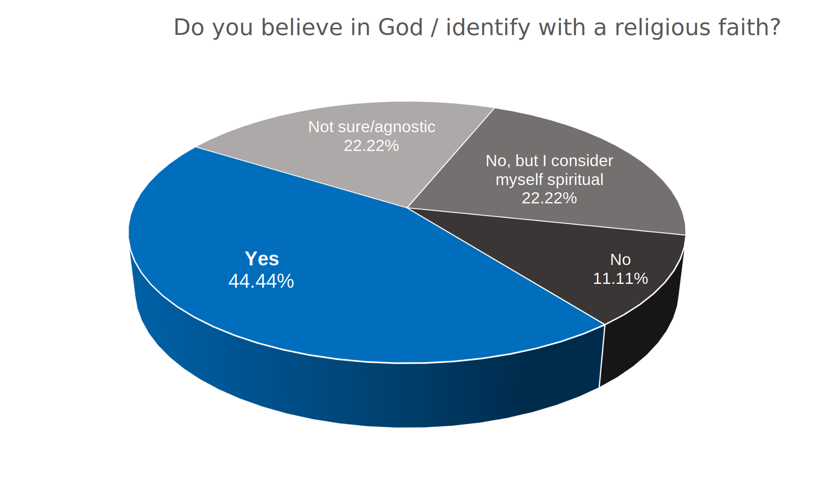
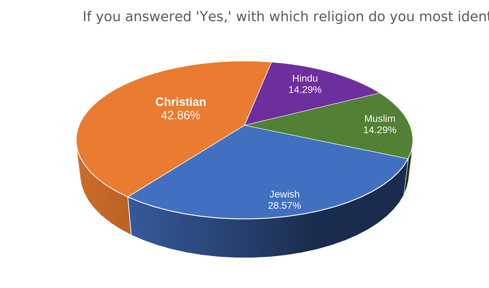

A.I. art by DALL-E 2
Like many others, I am a person who doesn’t believe in God, but is primed to believe in Him — or something similar to Him. I grew up in the Christian faith, and as such the way I see the world has been molded with Him in mind. To simply believe in nothing would be to leave myself half-empty, and I couldn’t allow myself to live that way.
When I was fourteen, God and I parted ways — not as amicably as I would have liked. I acted a bit like a petty ex: for years afterward, I sought all possible channels to disprove his very existence (equally as impossible as the opposite) and I thought every other person who continued to believe Him to be unfathomably stupid. “Is there a purpose to life without religion?” I basically spat into a Google Doc in May, 2020. “A crucial aspect of religion is the solace it provides of the otherwise uncertain era after death. It claims to not only hypothesize, but to know, with unshakable certainty, that there is a life after death. That there is a meaning, beyond the visible meaning here on Earth, to our daily lives, and the course we take with it.” I suppose I was going to write something along the lines of, “But THAT is WRONG!!!!,” and I would have gone on to write some teenage-atheist-angst-filled treatise about how religion was laughably unnecessary to find purpose in life. But I didn’t. I could never make myself finish it. (I shudder at the thought of what I would have written if I could.)
The pandemic hit in March of that year, and I will spare you the rest of that exposition, since you’ve heard it a million times; but, along with every other fear and anxiety that struck me in that period, another came along and lodged itself quite sharply and comfortably in the back of my mind: the fear of eternity, and being absent for it. I am a person who likes being in control, but here lies the one unshakable reality which I was forced to face, and was not in my control whatsoever. For many nights, I lay awake, thinking to myself, “I am going to die. I am going to die.” I was prone to panic attacks. I thought about ways to make myself in control of the fact; some methods were, as you can imagine, less pleasant than others.
It took until my freshman year in university to figure out what worked for me — or, at least, start to figure it out. I still have the fear, and I still have panic attacks. But for me, it helps to imagine God as a place. It’s a sprawling valley of rolling hills, green and lush with flora and fauna. Sometimes, when I think of this place, I imagine there are other people, but they aren’t God, nor are they angels or spirits. Just normal people. This place isn’t heaven, to be exact; but it is a kind of paradise — which maybe resembles Northern California a bit too much, but no matter.
All this is to say that one night, a few weeks ago, I wondered how others would imagine God, if at all. Did people think God was a person, or like a person? If so, what did that person look like? If not, what did that look like? I recalled that a writing professor I had last term had asked a similar question but of Satan, as a creative exercise. So, in a whim of inspiration, I asked people about both, anonymously through a Google Form. (Respondents were given an optional opportunity to provide their names.) I got nine responses in the twenty-four hours I had it opened. In terms of sample size, it’s not too appealing; nonetheless, I found the results incredibly intriguing, and I would like to share them with you here.
I prefaced the prompts with two identifying questions: “Do you believe in God / identify with a religious faith?” and if the respondent answered ‘yes,’ “With which religion do you most identify?”

Response to this question was not limited by a ‘Yes’ answer to the previous question. Data may be influenced by non-practicing respondents who ethnically or culturally identify with a faith, e.g. Judaism or Hinduism.
As I anticipated, most respondents were religious or spiritual, with a majority of religious respondents being Christian. The types of responses I got in the subsequent prompts tended to be strictly divided along similar lines: Christians, understandably, were less interested in providing visual descriptions as they were in describing his effect. (God is pretty straightforward as to how He feels about the issue: “You cannot see my face, for no one may see me and live.”)
Responses have been edited for length and clarity.
To me, God is caring and kind. He always looks out for everyone’s best interests and wants the best for you. He has a plan for your life … that will make you the greatest version of yourself.
— Anonymous, identified as Christian
If we take the creative angle, we can interpret God as a sort of eldritch or cosmic entity. Too immense to perceive in any meaningful way. … The same way a 2D shape cannot comprehend the nature of a 3D shape, a human mortal cannot comprehend the nature of God — a being of higher dimensions. However, in Islam, we are given a series of characteristics that we can use to build our abstract perceptions, such as “The Kindest” and “The All Powerful.”
— Shadman, identified as Muslim
Two other Christian respondents, one non-practicing, imagined God to at least be similar to Jesus, who appeared as human two thousand years ago in Christian theology.
It dawned on me that — beyond God’s various proclamations of his own that he cannot be seen or imagined — those who believe in Him simply don’t need to. My need to conjure an imagery arose from a gap which believers of the Abrahamic faith have already filled. Religion already provides satisfying answers; it’s why religion is appealing in the first place.
Responses that did provide visual descriptions varied greatly in length and depth. Some turned to familiar Renaissance imagery: One respondent, who identified as agnostic, imagined God as a “white light, or a man with a relatively long brown beard, warm smile, and dressed in a white tunic.” Another, who identified as Jewish, simply saw him as a “wise old man with a long beard.” (This was the prompt for the left half of the cover art for this article. The prompt for the right half was the agnostic respondent’s description of Satan: “Glowing yellow eyes, sharp teeth, horns, evil smile.”)
I was particularly moved by a submission from Akhila, who identified as Hindu but non-practicing. Her response is presented here in full:
God, to me, looks like when I saw a man walk up to a woman and ask her if she needed a hug, at 6 a.m. outside a Starbucks, in 40-degree weather. I see divinity in people dancing in the streets at a pop up dance floor in Berlin. I see divinity in medieval art, yearning for the love and comfort of another living being. I see divinity in the plants that create my air, and my dog that eats his own poop. I see it in the carvings of sculptors, the stonemasonry of architects from the 1500s, and in the performances of actors in my Shakespeare class. In the laugh of someone on the train, the hands of my friends as they show me memes on their phones, and the eyes of someone as we hold eye contact and understand chronic illness, together. I grew up Hindu so maybe that’s why I see divinity in everything; maybe it’s a chicken-or-egg sort of thing. I see it in myself, my world around me. The table and chair I eat on, the cereal and coffee. I see divinity in action and in silence. In the scarves I knit and the smiles on my friends' faces as I ask them if they would like to hold my ball of yarn as they tell me about their day. I see it in life and in death. It’s everywhere, yet I guess it’s nowhere. I think we are all divine inside, as we live and breathe. And return to our earth, back into our air. We never leave each other. We are always with one another. Which looks like divinity to me.
Of Satan, Akhila wrote:
It’s that thing that lives within all of us, just as we are divine. We hold it within us to manifest something that is not pleasant. Maybe necessary, maybe as defense; maybe we don’t think about it, or think about it too much. Even in Christian lore, Satan is God’s child, is he not? He is divinity incarnate — yet a different form. We, as humans, are capable of immense range and hold so much within us at all times. We use them at different times, and to pretend otherwise is a little negligent in my opinion.
It was incredibly refreshing to see my own perception of God reflected and embraced so wholly by someone else. And I must admit that, in the weeks it took me to muster the energy and courage to write this article, I have taken to adopting this worldview in part. Some may argue that what Akhila described is pandeism, the idea that the creator of the universe became the universe, and everything in it; but deism and its subsets have belief in the existence of God as a central tenet. I do not share this belief, though I may agree with the effects, and the great awe which they instill.
I don’t have any grand conclusion about my findings. But I do think it’s a bit funny how, for all our progress in science and rational thought, we have yet to understand why — regardless of one’s belief in a God or several or anywhere in between — we all still need to cling to something. But in a way, that’s the beautiful thing about humanity, perhaps even a redeeming quality: the need to believe, even in the unbelievable, even if it makes no sense whatsoever — as long as we aren’t alone. ■